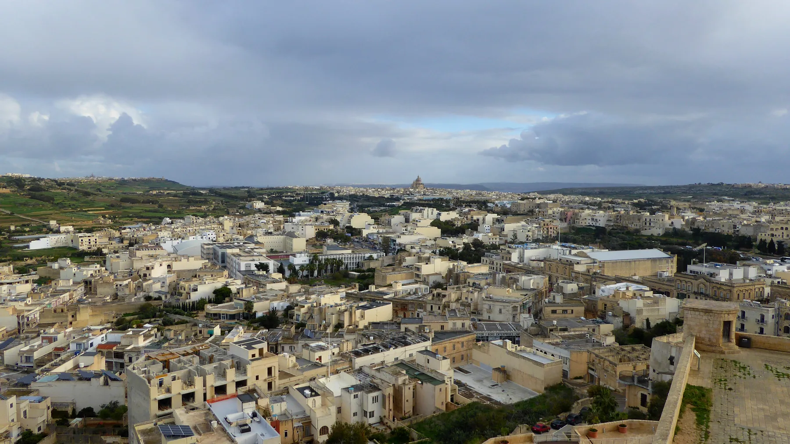

The Citadel establishes identity and orientation. It does not promise museum entry, an uninterrupted route or a landmark view from every home.

IR-RABAT · VICTORIA · GOZOCity centre.
City centre.
Island context.
Iċ-Ċittadella, It-Tokk and the wider town make Victoria legible on the map. A locality label still cannot tell you the view, access or daily rhythm of a particular street.
ONE GOZO LOCALITY
Start with the correct Rabat.
Official records distinguish Ir-Rabat (Għawdex) from Rabat on Malta. Victoria includes Iċ-Ċittadella and the surrounding town, while neighbouring Fontana remains a separate locality. The 2906 taxonomy keeps exact property positions private.
It-Tokk, shopping streets and residential lanes differ. Parking, pavement continuity, noise and frontage belong to the exact address and viewing time.
Ir-Rabat (Għawdex), Rabat (Malta) and nearby Fontana need separate addresses, maps and editorial pages.
A fortified city above the town.
Visit Gozo treats the Citadel as a distinct fortified precinct and Heritage Malta identifies museums within it. Several museum operations changed in 2026, so the live Heritage Malta record must decide what is open.
Heritage Malta 2026 leaflet ↗The lived centre below.
Gozo Album and Visit Gozo place It-Tokk in the surrounding town. This edition keeps the square, side streets and wider residential fabric distinct instead of flattening them into one walkability claim.
Official Gozo Album ↗EVERYDAY CHECKS
Concrete services, live details.
These current operator and government sources establish practical context. They are not rankings and do not claim that any destination is nearest to a property. Recheck schedules, opening status and the permitted route directly.
Arkadia Foodstore
The operator places its Gozo foodstore at Arkadia Commercial Centre on Triq Fortunato Mizzi. Current hours belong on the live operator page.
Arkadia operator page ↗The Duke
The Duke describes a foodstore and other retail services in central Victoria. That is one practical anchor, not a complete inventory of the town.
The Duke operator page ↗Victoria Bus Terminal
Malta Public Transport identifies the terminal and current Gozo routes. This page freezes no timetable, frequency or stop-to-property duration.
Current journey information ↗Local Council
The council office is at Banca Giuratale on Pjazza Indipendenza. Current services and office access belong on the official council record.
Victoria council page ↗FOOD WITHOUT A RANKING
Two sourced examples, no “best of” claim.
Operator pages can anchor a viewing-day shortlist. They still do not establish proximity to every home, and current status should be checked before travelling.
Roża
Roża describes a Maltese and Mediterranean restaurant in central Victoria. Use its current operator page for address, status and reservations.
Roża operator page ↗It-Tokk
It-Tokk places its traditional-products shop on Independence Square. Its own pages currently disagree on seasonal hours, so this edition publishes none.
It-Tokk operator page ↗Continue west with the right locality.
For village-centre, Ta’ Pinu and western-countryside context, use the separate L-Għarb edition. Its locality name, services and map remain distinct from Ir-Rabat (Victoria).
Continue south with the right locality.
For Triq tal-Għajn, the historic wash-house and the Victoria–Xlendi corridor, use the separate Il-Fontana edition. Fontana remains its own village, not a Victoria district to merge into this page.
No invented shortcut.
This edition draws no locality boundary, property pin, straight-line walk, bus schedule, car-traffic estimate or taxi price. Any future route must use verified road or pedestrian geometry from an exact permitted origin and destination. Museum access remains a separate live check.
Open the locality overview only when you need it.
The map frames Ir-Rabat (Victoria) and surrounding place labels for orientation. It deliberately draws no boundary, route, distance, travel time or listing location and loads from OpenStreetMap only after your click.
Address Registrar · Gozo Album · Rabat Għawdex Local Council · Fontana Local Council · Visit Gozo · Heritage Malta · Malta Public Transport · Ministry for Gozo · Arkadia · The Duke · Roża · It-Tokk
No ranking, fixed opening hours, property-specific distance, guaranteed view, parking claim, accessibility promise or locality-wide journey time is implied.